Exhibitor space - setting up and managing your booth
In this article learn how, as an exhibitor, representative or admin, you can configure your booths and interact with attendees.
This feature allows you to create exhibitor booths and facilitate interaction between attendees and exhibitors. In this article learn how, as an exhibitor, representative or admin, you can configure your booths and interact with attendees.#
NB: Once set up, representatives have the same permissions as exhibitors
Skip to:
How to use the exhibitor leads table
Accessing your booth setup#
As an exhibitor you can access your booth by following the link provided to you by the event organiser. This will direct you to create an account with Oxford Abstracts. After this you will be directed to your personal dashboard, from where you can select the event you are exhibiting in.
Click view to access your portal.
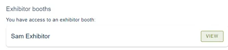
Click Exhibit → Edit booth to get started.
#
Configuring your booth#
Exhibitors have two pages that they can customise. Both of which are edited in the same page.
-
A preview module on the 'teaser' view for exhibitors
-
A main booth page where you can include additional information
Teaser page
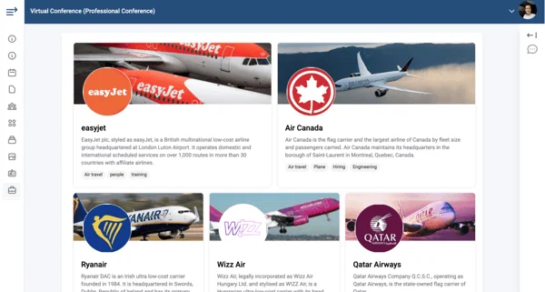
You can create your exhibition teaser view with the first 4 questions on the booth setup. These will all carry through to your main Exhibitor booth page.
The input you add in the fields shown on the left of the table below will populate the preview of the fields shown on the right hand side.
| Your booth name | |
| A description of your booth | |
| Any relevant tags you want associated with your booth to inform attendees what you do and if you are offering anything. | |
| Your logo and header image |
Header and Logo Image Dimensions
The header and logo images need to be the following sizes:
-
Large Exhibitor Header 516x160
-
Small Exhibitor Header 339x124
-
Logo 124x124
You will be able to adjust the scale and position of the images once they have been uploaded.
Please note: The maximum file size for the exhibitor booth upload is 10MB.
Exhibitor booth page
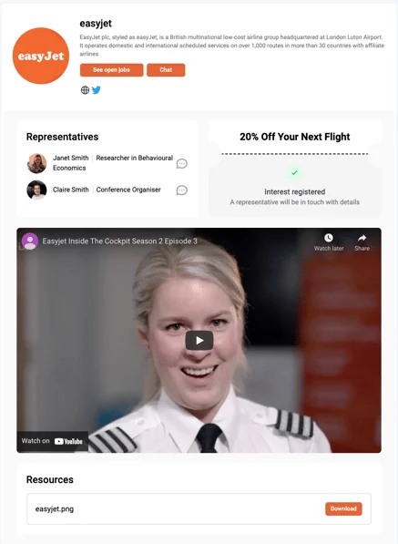
Add your details to the form on the setup page and you will see the details being added to your booth.
| Primary colour This is the colour of the buttons on your booth page. Click the rectangle to change the selected colour. | |
| Social media Enter your social media URLs to display at the top of your booth. | |
| Call to action Add a custom call to action for any visitor that visits your page. Enter the text you want on the button and the URL the button should take the attendee to. | |
| Representatives Add all representatives that will be at the booth during the day of the conference. Share the sign in link with your reps so they can create an account with Oxford Abstracts and get access to the exhibitor tools. Your reps also need to be signed in on the day so that attendees can interact with them. | |
| Booth offer Add an offer to your booth to encourage attendees to interact with you. If an attendee clicks on the booth offer, their information will be added to the lead table and the exhibitor can then contact them. | |
| Promo video Include a link to a promotional video you want attendees to see. | |
| Resources Upload any resources you want to give to the conference attendees. |
Publishing your booth#
In order for conference attendees to see your booth you must set the status to published. This can be done by clicking the dropdown in the top left of your portal. This will then display your booth in the conference.
You can unpublish your booth anytime, should you wish.
NB: Once your booth is set to 'published' any additional changes you make will autosave and update automatically
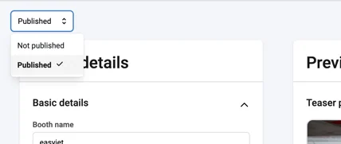
You can edit any of these details at any time.
#
How to use the leads table#
Access your leads table via the pie chart icon in the navigation.
This is where, as an exhibitor, you can track the stats for your page and see what leads you have from the conference. You can also download the data at any time by clicking the Download data at the top right of the screen.
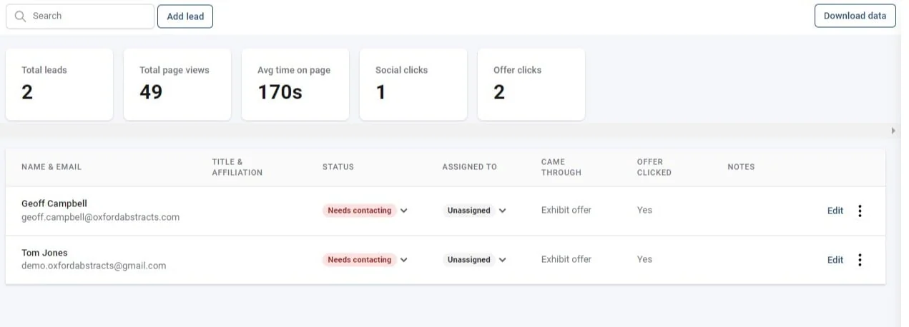
How do leads get added?
Leads will be added automatically through several interactions:
-
When an attendee clicks on your exhibit offer
-
If an attendee accepts a direct chat from one of your representatives or if an attendee direct messages one of your representatives.
-
Manually adding a lead.
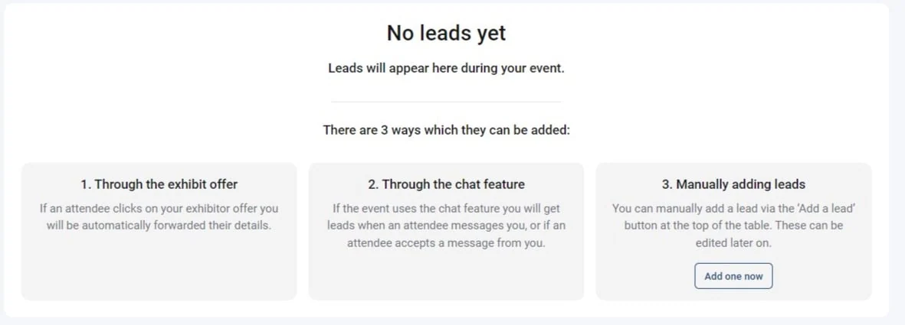
The Add a lead button is always available at the top of the screen to manually add your own lead.
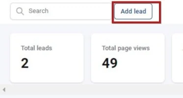
Click the button if you choose to do this. You can then complete the lead's details, choose to assign to a representative, or change the contact status.
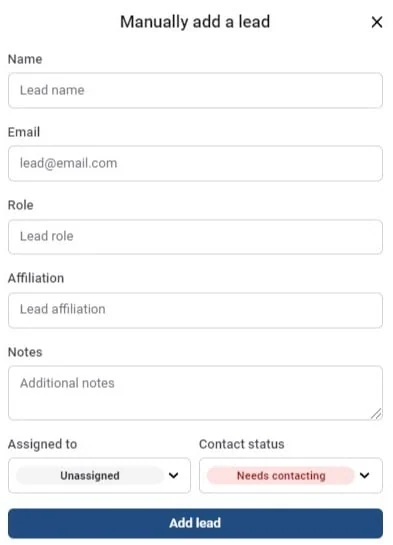
How can I manage my leads?
Once a lead has been added to your table, you can monitor and update their status.
You can:
-
Update whether they have been contacted or still need contacting (This will update automatically if you message the lead from within the Oxford Abstracts platform).
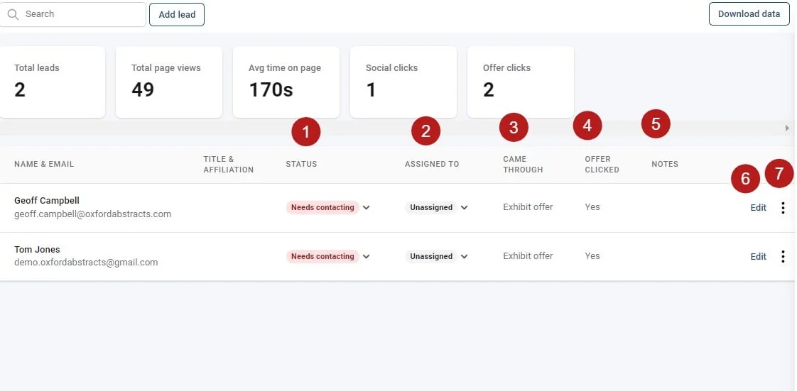
-
Assign a representative to a lead to keep track of who has been in contact with the attendee.
-
View how the lead was collected. For example if they came through the exhibit offer.
-
See of they clicked the offer.
-
View any notes on the lead with any details from conversations you've had with them.
-
Edit the details (you can add notes here)
-
Click the 3 dots to delete a lead.
Booth linking in the chat feature#
As an exhibitor, and depending on the settings configured by the event admin, you can interact with attendees through direct chat. You can also share a link to your booth via the link button inside the chat feature.
For further guidance on the chat feature, see
The conference platform - using the chat feature and controlling notifications
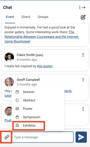
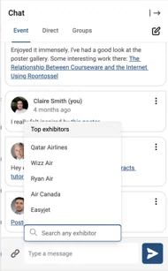
Did this page solve it?
Thanks — this helps us fix it.